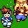
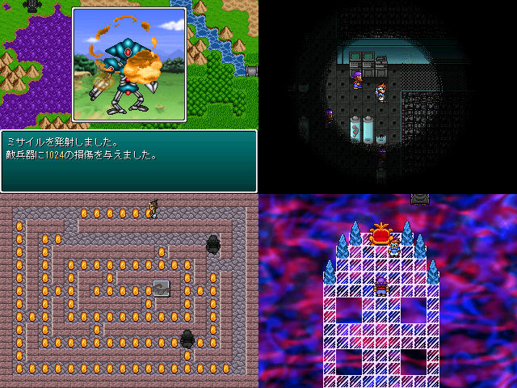

 |
|
 |
|
| 作者：魔禁胆 | |
| ジャンル：詰め合わせ | |
| ツクール：2000 | |
| 作者コメント： ４つのゲームが入っています。 「機動勇者ＡＬＥＸ」：自作戦闘ＲＰＧ 「恐怖の股間ドリル」：アレックスを掘れ！！ 「ファラオの呪いは鈍い」：パッ〇マン系のドットイート 「続ゴメスの穴」：GW2014祭りの続編 全部にゴメスが登場します。 主人公はゴメスです。本当です。 |
|
| 管理人コメント： その点機動恐怖の呪いはゴメスの穴は凄いよな、最後までゴメスたっぷりだもん。 |
|
| ダウンロード(1.65MB_05/11更新) / 感想掲示板 |
|
| 前の作品 / 次の作品 / TOPへ戻る | |